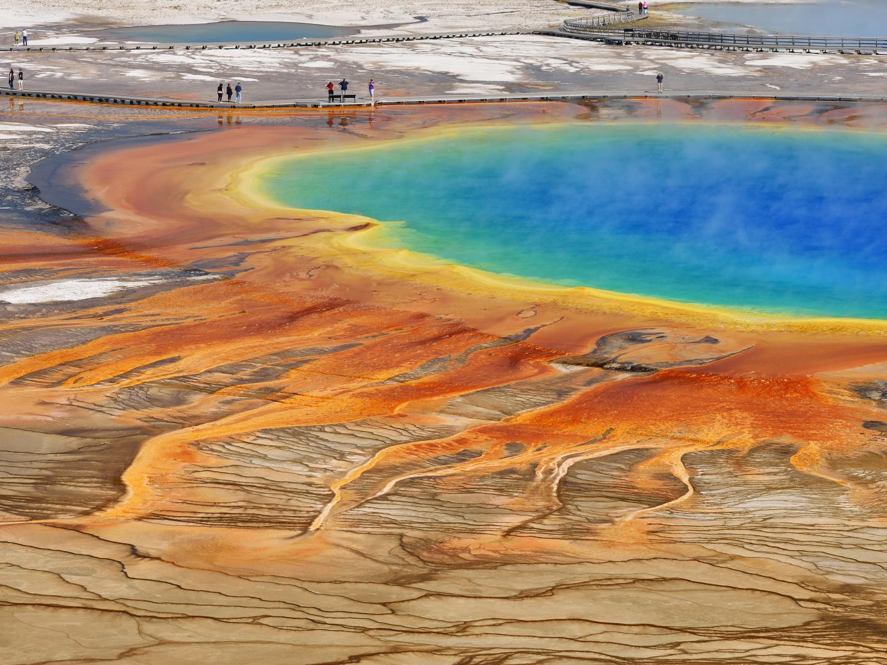
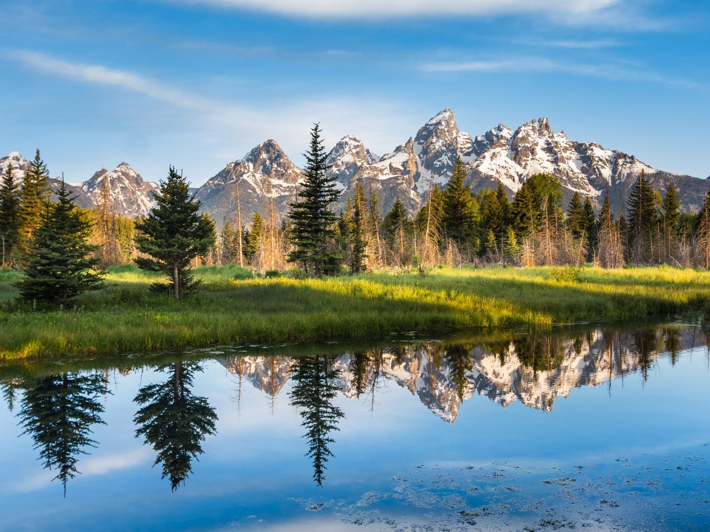
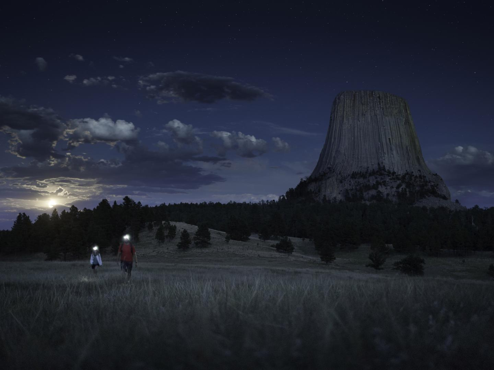
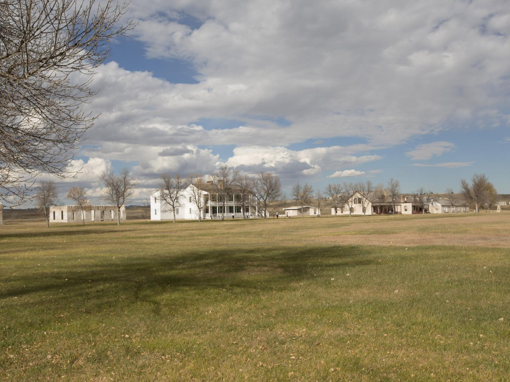
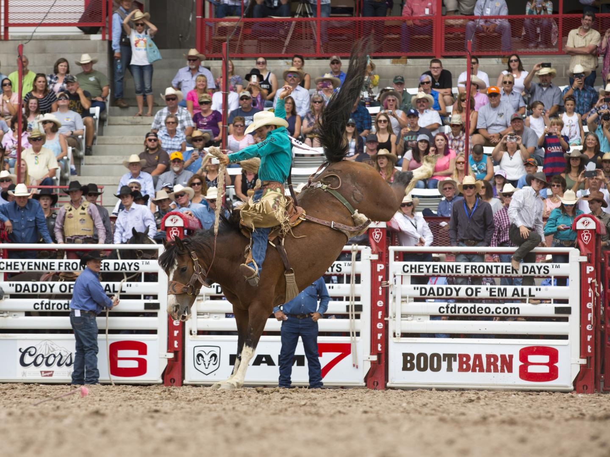
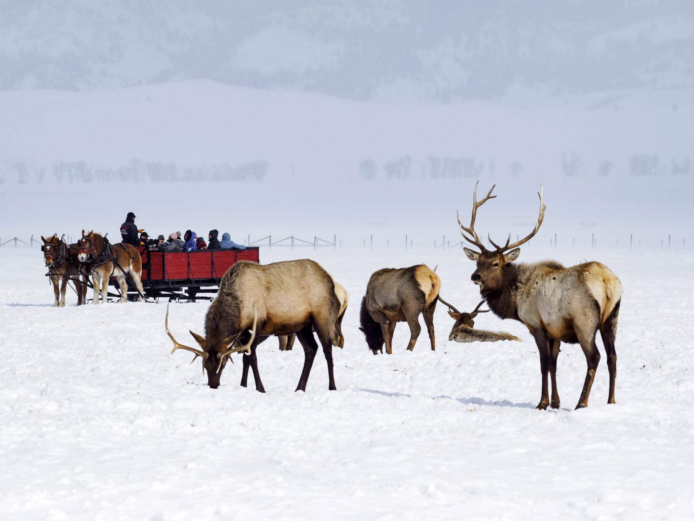
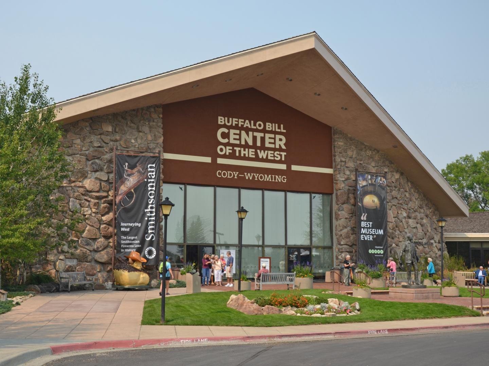
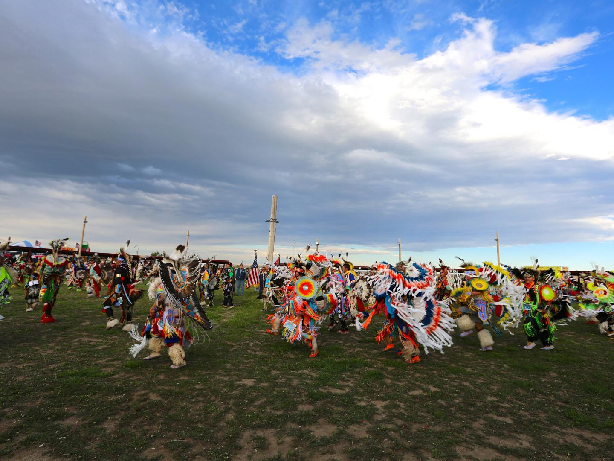
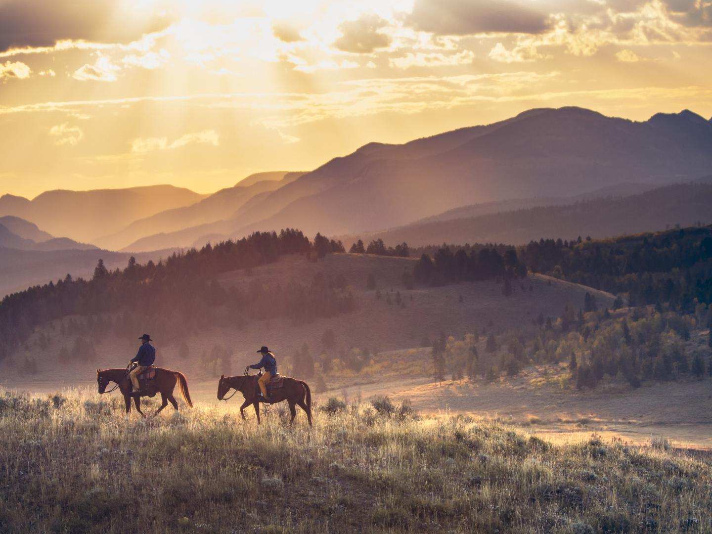
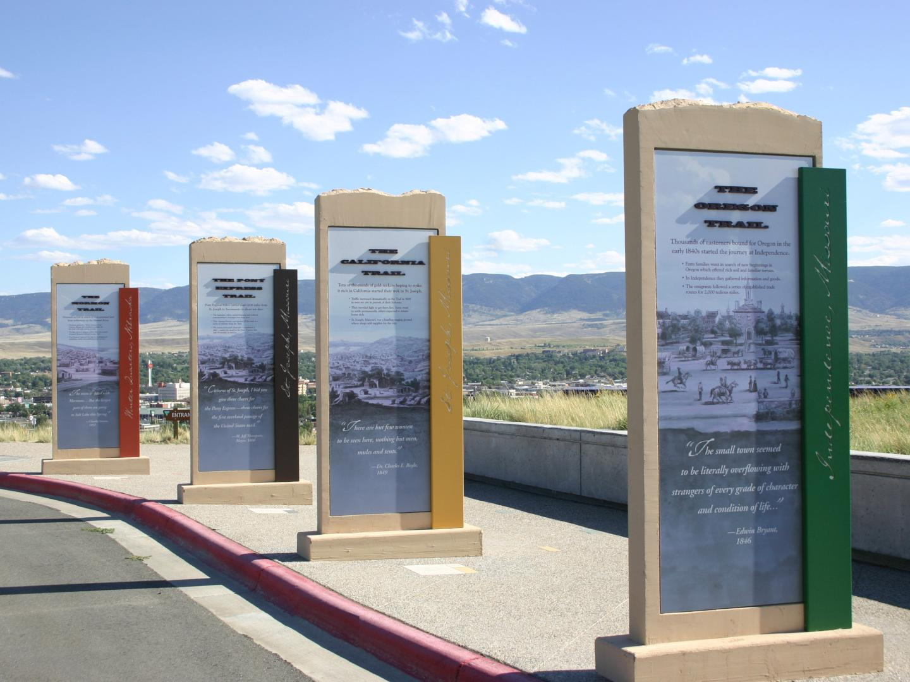

-
꼭 가봐야 할 곳

옐로스톤 국립공원
미국에서 가장 많은 사람이 방문하는 국립공원인 옐로스톤에는 험준한 산과 계곡,
웅장한 간헐천, 천연 온천 등 세상 어디에도 없는 아름답고 경이로운 자연이 있습
니다. 9,000km²에 달하는 광활한 보호구역이 있는 옐로스톤은 연중 야외 레크리
에이션을 즐기기에 더없이 좋습니다.
더보기
-
꼭 가봐야 할 곳

그랜드 티턴 국립공원
스네이크강(Snake River)의 패들링, 배낭여행, 하이킹, 승마, 겨울 스포츠, 암벽
등반은 그랜드 티턴 국립공원의 절경 속에서 할 수 있는 수많은 액티비티 중 극히
일부분에 불과합니다. 공원을 지나는 몇 개의 경관도로를 달리며 들쭉날쭉한 산봉
우리, 그림 같은 호수와 사적지를 감상해 보세요.
더보기
-
꼭 가봐야 할 곳

데빌스 타워 국립기념지
북부 플레인스 인디언은 드넓은 대지 위에 우뚝 솟아 경외감을 자아내는 6,500만
년 된 돌기둥을 신성한 것으로 여겼습니다. 타워 트레일을 탐험하며 현지 부족민
들이 남긴 기도자의 천을 찾아보세요. 독특한 지형, 원주민과 야생동물에 대해 더
알고 싶다면, 공원 요원이 안내하는 투어를 추천합니다.
더보기
-
꼭 가봐야 할 곳

래러미 요새 국립유적지
1834년도에 세워진 군사 요새이자 모피 교역소였던 이곳을 투어하며 시대 의상을
갖춰 입은 가이드의 해설과 함께 복원된 12개의 건물을 둘러보고 올드 아이언 브리
지(Old Iron Bridge)에 올라 보세요. 보물찾기를 통해 역사를 탐방해 보는 것도
좋습니다.
더보기
-
꼭 가봐야 할 곳

샤이엔 프런티어 데이즈
와이오밍주의 개척자 유산을 기념하는 일주일간의 축제로 1897년부터 이어져 온
샤이엔 프런티어 데이즈는 미국 서부 문화를 심도 있게 볼 수 있는 기회입니다.
재현된 개척자 마을, 방대한 로데오 일정, 황소 타기, 아메리카 원주민 마을, 콘서
트, 척왜건요리 경연 대회는 물론 퍼레이드, 카니발 등 즐길 거리가 가득합니다.
더보기
-
꼭 가봐야 할 곳

국립 엘크 보호구역
7,000여 마리의 엘크 떼가 겨울을 나는 세계 최고의 엘크 서식지인 잭슨 근교의
국립 엘크 보호구역(National Elk Refuge)에서 썰매를 타 보세요. 엘크의 번식기
인 가을에는 암컷을 부르는 수컷의 울음소리와 함께 보기 드문 장관이 펼쳐지며,
봄, 여름은 조류 관찰의 적기입니다.
더보기
-
꼭 가봐야 할 곳

버팔로 빌 센터 오브 더 웨스트
버펄로 빌 박물관, 휘트니 웨스턴 미술관,플레인스 인디언 박물관,코디 파이어암
스 박물관과 드레이퍼 자연사 박물관까지, 하나의 지붕 아래 다섯 개의 박물관이
공존하는 이곳은 미국 서부에 대해 자세히 배워 볼 수 있는 공간입니다.
더보기
-
꼭 가봐야 할 곳

윈드 리버 컨트리
광활한 윈드 리버산맥에 자리한 윈드 리버 컨트리는 이스턴 쇼쇼니와 노던 아라파
호 부족이 살고 있는, 미국에서 7번째로 큰 인디언 보호 구역입니다. 지역에 흩어
져 있는 작은 마을에서 환상적인 산세를 배경으로 자리한 문화유산 센터, 역사 지
구, 파우와우와 교역소를 발견할 수 있습니다.
더보기
-
꼭 가봐야 할 곳

빅혼산맥
옐로스톤으로 이어지는 빅혼산맥을 여행하는 방문객 앞에는 아름다운 경관도로
와 전망대가 펼쳐집니다. 숲속을 탐험하며 야생 동물을 만나보세요. 문화 센터를
방문하고 로데오를 구경하거나 음악 축제를 즐기며 이곳의 야생과 사막, 험준한
산봉우리의 멋진 풍경을 감상할 수 있습니다.
더보기
-
꼭 가봐야 할 곳

국립 역사 트레일 자료관
스퍼에 위치한 이 자료관에서는 와이오밍을 지나 캘리포니아, 오리건, 모르몬(, 포
니 익스프레스 트레일을 거쳐 서쪽으로 이동했던 50만 명에 달하는 개척자들의 놀
라운 여정을 볼 수 있습니다. 역사에 관심이 많다면 꼭 들러 보세요. 입장료는 무료
입니다.
더보기

 목적지
포니 익스프레스 국립역사트레일
목적지
포니 익스프레스 국립역사트레일
 체험
프로가 알려주는 멋진 야생동물 촬영 비법
5가지
체험
프로가 알려주는 멋진 야생동물 촬영 비법
5가지